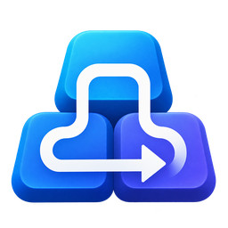
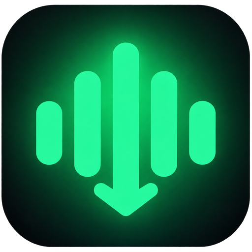
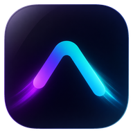
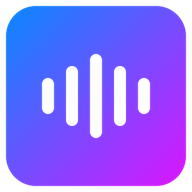
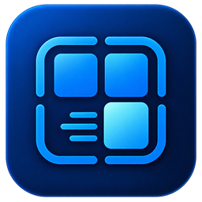
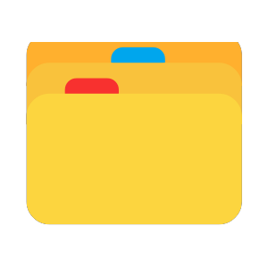

Yazılım geliştirici,video editör vearayüz tasarımcısı.

BurakPekel.
Yaratıcı uygulamalar geliştirmeyi ve fikirleri gerçeğe dönüştürmeyi seviyorum. Aynı zamanda video kurgu ve UI/UX tasarımı tutkunu bir geliştirici ve video editörüyüm. Şu sıralar Mixora, Aurora Radios, SpotiDrop ve Hotpad üzerinde çalışıyorum.
Çalışmalara bak GitHub Microsoft Store
JavaScriptPythonC# / .NETHTML / CSSTailwind CSSPremiere ProAfter EffectsFigma
Çalışmalar
 NotchifyEkranın üstüne Dinamik Ada ekleyen masaüstü uygulaması: müzik, bildirimler, pano geçmişi ve widget'lar.Windows
NotchifyEkranın üstüne Dinamik Ada ekleyen masaüstü uygulaması: müzik, bildirimler, pano geçmişi ve widget'lar.Windows- Mixoraeski adıyla Fluent MixerUygulama seslerini Oyun, Sohbet, Medya ve Aux gruplarına ayıran, sanal sürücü gerektirmeyen ses mikseri.Windows
 LunaDockMasaüstündeki dosya, klasör ve kısayolları tek tıkla açılan düzenli yığınlara ayıran düzenleyici.Windows
LunaDockMasaüstündeki dosya, klasör ve kısayolları tek tıkla açılan düzenli yığınlara ayıran düzenleyici.Windows
Hotpadİkinci bir klavyeyi makro klavyeye çevirir: program aç, metin yaz, kısayol gönder, adım dizisi çalıştır.Windows
SpotiDropYouTube, SoundCloud ve Bandcamp'ten müziği etiketli MP3 olarak Spotify Yerel Dosyalar'a indirir.Windows
Aurora RadiosRuh haline, türe ya da ülkeye göre dünya radyoları. Reklamsız, hesapsız, çalan şarkı anında görünür.Windows
VICE SonarSteelSeries GG Sonar için hafif kontrol aracı: ses, ChatMix, EQ ve RGB tek bir widget'tan.Windows
GlideSnapAlt tuşunu basılı tutup pencereleri farenin herhangi bir yerinden sürükleyin ve boyutlandırın.Windows
vOrganizerDağınık klasörleri dosya türüne göre ayıran; önce önizleyen, tek tıkla geri alabilen düzenleyici.Windows BokMailKişisel adresinizi paylaşmadan kullandığınız ücretsiz geçici e-posta servisi.Web
BokMailKişisel adresinizi paylaşmadan kullandığınız ücretsiz geçici e-posta servisi.Web GoliathModerasyon, seviye sistemi, müzik ve yardım paneliyle sunucuyu düzenleyen çok amaçlı Discord botu.Discord botu
GoliathModerasyon, seviye sistemi, müzik ve yardım paneliyle sunucuyu düzenleyen çok amaçlı Discord botu.Discord botu LolableLeague of Legends toplulukları için rank, maç dökümü ve liderlik tablosu sunan Discord botu.Discord botu
LolableLeague of Legends toplulukları için rank, maç dökümü ve liderlik tablosu sunan Discord botu.Discord botu
Mağaza uygulamalarım Microsoft Store profilimde; Hotpad ve SpotiDrop kendi sitelerinden indirilir.
Kurgu.
SineOrbit, film sahnelerine hayat verdiğim sinematografik edit sayfam. En çok beğenilen kare 91,8B beğeniye ulaştı.


Yana kaydır
Kurgunun yanında müzik de üretiyorum; Spotify'da sanatçı profilim var.
Masaüstü
- İşletim sistemi
- Windows 11 Pro
- İşlemci
- AMD Ryzen 5 5600X
- Ekran kartı
- NVIDIA RTX 3060
- Bellek
- 16 GB DDR4 3200 MHz
- Ekran
- 2560 × 1440 · 144 Hz
- Depolama
- 1 TB NVMe SSD
- Editör
- VS Code
- Kabuk
- PowerShell 7
Şimdi.
Discord durumumdan canlı okunur, on beş saniyede bir yenilenir.
- Discordkingpin1dev…Yükleniyor…Oynuyor:
- SpotifyBoştaŞu an bir şey çalmıyor.
- VS CodeKapalıŞu an kod yazmıyor.
- XboxKingpin7841Xbox oyunlarını Steam'in yanı sıra takip ettiğim platform. Game Pass ve Xbox'a özel oyunlar için.
Steam.
Kütüphanemde 159 oyun var; 40 tanesini yüzde yüz bitirdim ve toplamda 9.784 başarım açtım. Bitirme oranım %74.
Steam seviyem 36 · #1473 Vice Club


Birlikte bir şeyler yapalım.
Proje fikrin mi var, birlikte çalışmak mı istiyorsun? Bir merhaba bile yeter.
admin@bokmails.com